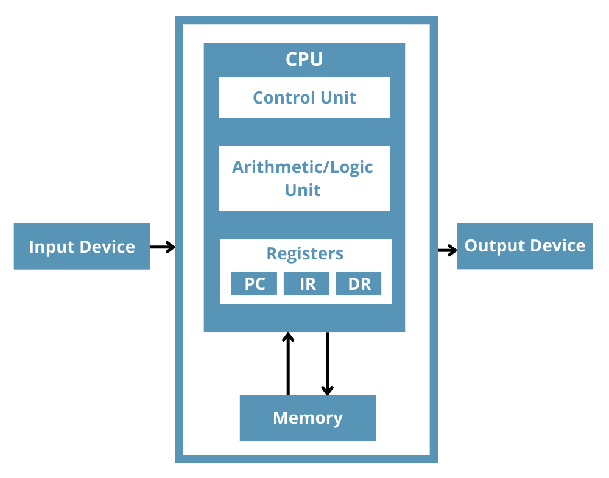

Registers
Registers are high-speed storage locations within a computer's central processing unit (CPU) that are used to store small amounts of data or information temporarily. They are essential components in the operation of a CPU and play a crucial role in the execution of instructions and the processing of data.
What are Registers?
Registers are small, fast storage locations within the CPU that can be accessed directly by the processor's control unit. They are designed to store data, addresses, and control information required for the execution of instructions. Registers are typically implemented using high-speed static RAM (SRAM) or flip-flops, allowing for faster access times compared to main memory.
Registers are grouped into different categories based on their function and purpose within the CPU. Some common types of registers include:

- General-purpose Registers: These registers are used for storing data and addresses during the execution of instructions. They can hold values that are used as operands in arithmetic and logical operations, as well as addresses for memory access.
- Special-purpose Registers: These registers have specific functions within the CPU, such as storing the program counter (PC), which keeps track of the current instruction being executed, or the status register, which holds information about the current state of the processor.
- Segment Registers: These registers are used in memory segmentation, where different portions of memory are assigned to different tasks or processes. Segment registers store the starting addresses of memory segments.
- Floating-point Registers: These registers are designed specifically for storing and manipulating floating-point numbers, which are used in scientific and mathematical computations.
Functions of Registers
Registers serve several important functions within the CPU, including:
- Data Storage: Registers temporarily store data that is being processed by the CPU. This data can include operands for arithmetic and logical operations, as well as intermediate results.
- Address Storage: Registers store memory addresses that are used to access data from main memory or to store results back into memory.
- Control and Status Information: Registers hold control and status information related to the execution of instructions and the state of the processor.
- Pipelining: Registers are used to support pipelining, a technique that allows the CPU to execute multiple instructions simultaneously by breaking them down into smaller stages.
- Instruction Decoding: Registers are used to hold the current instruction being executed, allowing the control unit to decode and execute it properly.
Register Architecture
The number and types of registers available in a CPU are determined by its register architecture. Different CPU architectures have different numbers and types of registers, which can impact the performance and capabilities of the processor.
Some common register architectures include:
- Accumulator-based Architecture: This architecture has a single accumulator register used for arithmetic and logical operations, along with a few other special-purpose registers.
- RISC (Reduced Instruction Set Computer) Architecture: RISC architectures typically have a large number of general-purpose registers, allowing for faster execution of instructions by reducing the need for memory access.
- CISC (Complex Instruction Set Computer) Architecture: CISC architectures often have fewer general-purpose registers but include more specialized registers for specific functions.
Register Addressing
Registers are typically addressed using a register address or register name. The CPU uses these addresses or names to identify and access specific registers during instruction execution.
There are two main methods of register addressing:
- Direct Addressing: In this method, the register is explicitly identified by its name or address within the instruction itself. The CPU directly accesses the specified register based on this information.
- Indirect Addressing: In this method, the instruction specifies a memory address that contains the actual register address or name. The CPU first retrieves the register address or name from memory and then accesses the corresponding register.
Importance of Registers
Registers play a critical role in the performance and efficiency of a CPU. By providing fast, temporary storage for data and addresses, registers reduce the need for frequent memory access, which can be slow and can introduce bottlenecks in the execution of instructions.
The availability of registers and their efficient use can significantly impact the overall speed and throughput of a CPU. Optimizing register usage and designing efficient register architectures are important areas of research and development in computer architecture.